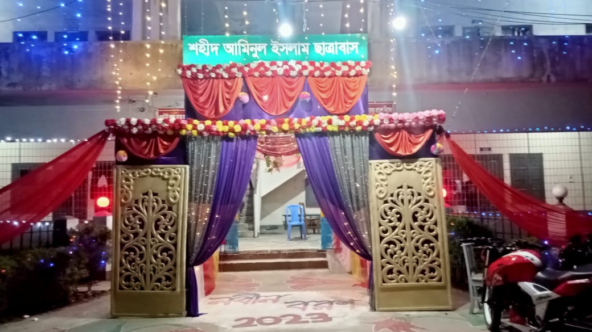

দিনাজপুৃর পলিটেকনিক ইনিস্টিটিউট
শহীদ আমিনুল ইসলাম ছাত্রাবাস, দিনাজপুর। যাহা দিনাজপুর পলিটেকনিক ইন্সটিটিউটের একটি ঐতিহ্যবাহী ছাত্রাবাস। যেটি দিনাজপুর পলিটেকনিক ইন্সটিটিউটের সৌন্দর্য বৃদ্ধির পাশাপাশি শিক্ষার মান বৃদ্ধি তথা দিনাজপুর পলিটেকনিক ইন্সটিটিউটকে গড়ে তুলেছে দেশের সেরা পলিটেকনিক গুলোর মধ্যে একটি। এখান থেকে প্রতি বছরই শিক্ষার্থীদের অনেকেই ভর্তি যুদ্ধের মধ্যমে উচ্চ শিক্ষা গ্রহন, আর পরে দেশ ও জাতির তথা বিশ্ব উন্নয়নে অগ্রনী ভূমিকা রাখে। আর তাই অত্র ছাত্রাবাস প্রতি বারই মেধাবী শিক্ষার্থীদের জন্য একাডেমিক পুরস্কার বিতরনী, নবীন বরন এবং বিদায়ী সংবর্ধনার আয়োজন করে থাকে। শহীদ আমিনুল ইসলাম ছাত্রাবাস তারই ধারাবহিকতা বজায় রেখে আবারও আয়োজন করেছে নবীন বরণ অনুষ্ঠান ২০২৩।

হোস্টেলের নিতি নৈতিকতা
আজ আমি টিউন করবো কিভাবে সহজে ইউনিকোড বাংলা লেখা ও ব্যবহার করা যায়। আমরা সাধারনত বিভিন্ন ওয়েবসাইটে যেমন ফেসবুকে বাংলা লিখতে চাইলে ইউনিকোড বিজয় বা অভ্র কিবোর্ড ব্যবহার করি। যারা বাসায়, অফিসে ইন্টারনেট ব্যবহার করেন তারা এই সফটওয়্যারগুলি দিয়া বাংলা লিখতে পারেন কিন্তু যখন হাতের কাছে এগুলি না থাকে বা যারা সাইবার ক্যাফে গিয়ে প্রয়োজনীয় কাজ সারেন তারা বাংলা লিখবেন কেমন করে? যদি অনলাইনে বসেই কোন সফটওয়্যারের সাহায্য ছাড়াই আপনি ইউনিকোড বাংলা লিখতে পারেন কেমন হয়? আমি সেরকম একটা সাইটটের এড্রেস দিচ্ছি যেখানে আপনি সহজেই বাংলা লিখতে পারবেন এবং লেখার পর আপনি কপি করে কাঙ্খিত স্থানে পেষ্ট করুন। তাহলে এখনি শুরু করুন
